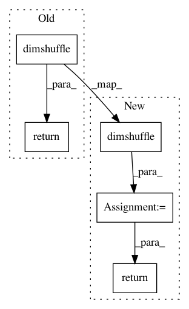

a6c9227372c607fc356b14e17c230cb9c1d5f589,keras/backend/theano_backend.py,,_old_batch_normalization,#Any#Any#Any#Any#Any#Any#,524
Before Change
shuffle_pattern = list(range(ndim))
shuffle_pattern[1] = shuffle_pattern[axis]
shuffle_pattern[axis] = 1
return theano.sandbox.cuda.dnn.dnn_batch_normalization_test(
x.dimshuffle(shuffle_pattern),
gamma.dimshuffle(shuffle_pattern),
beta.dimshuffle(shuffle_pattern),
mean.dimshuffle(shuffle_pattern),
var.dimshuffle(shuffle_pattern),
"spatial", epsilon).dimshuffle(shuffle_pattern)
else:
return theano.sandbox.cuda.dnn.dnn_batch_normalization_test(
x, gamma, beta, mean, var, "spatial", epsilon)
except AttributeError:
After Change
shuffle_pattern = list(range(ndim))
shuffle_pattern[1] = shuffle_pattern[axis]
shuffle_pattern[axis] = 1
result = theano.sandbox.cuda.dnn.dnn_batch_normalization_test(
x.dimshuffle(shuffle_pattern),
gamma.dimshuffle(shuffle_pattern),
beta.dimshuffle(shuffle_pattern),
mean.dimshuffle(shuffle_pattern),
var.dimshuffle(shuffle_pattern),
"spatial", epsilon).dimshuffle(shuffle_pattern)
else:
result = theano.sandbox.cuda.dnn.dnn_batch_normalization_test(
x, gamma, beta, mean, var, "spatial", epsilon)
return theano.tensor.as_tensor_variable(result)
except AttributeError:
pass
except ValueError:
pass
In pattern: SUPERPATTERN
Frequency: 4
Non-data size: 5
Instances
Project Name: keras-team/keras
Commit Name: a6c9227372c607fc356b14e17c230cb9c1d5f589
Time: 2017-01-05
Author: gvtulder@users.noreply.github.com
File Name: keras/backend/theano_backend.py
Class Name:
Method Name: _old_batch_normalization
Project Name: keras-team/keras
Commit Name: e99eac292db998960b9c384cb1106998a8489b02
Time: 2017-03-06
Author: abhai.dilip@gmail.com
File Name: keras/backend/theano_backend.py
Class Name:
Method Name: permute_dimensions
Project Name: keras-team/keras
Commit Name: e99eac292db998960b9c384cb1106998a8489b02
Time: 2017-03-06
Author: abhai.dilip@gmail.com
File Name: keras/backend/theano_backend.py
Class Name:
Method Name: expand_dims
Project Name: keras-team/keras
Commit Name: b057624707be574d78a741516be2f98c03f3e193
Time: 2015-08-09
Author: francois.chollet@gmail.com
File Name: keras/layers/convolutional.py
Class Name: Convolution1D
Method Name: get_output